Как читать авторский курс и нормативные материалы
Это учебные материалы, а не заключение о соответствии конкретного продукта. Организационные модели курса отделяйте от терминов стандарта: ППК в опубликованном проекте — машиночитаемый перечень, а живой реестр его версий является практикой сопровождения. Термин OSA в разных материалах имеет разный охват. Статус и обязательность нормативного документа проверяются отдельно; проект КАПО опубликован как проект первой редакции.
- Короткий вывод
- Что такое VEX в рабочем процессе
- Кто выдает VEX
- Откуда фактически берется VEX
- Базовый порядок работы
- Где хранить и где публиковать VEX
- Как выбрать формат
- Пример: C/C++ продукт и уязвимость в zlib
- Минимальный шаблон triage-записи
- Что должно блокировать выпуск VEX
- Как встроить VEX в РБПО-процесс
- Нормативная и методическая привязка
- Контрольный чек-лист для РБПО
- Короткая формула для команды
- Источники
- Связанные материалы курса
VEX в процессе РБПО: откуда берется и как выпускать
Короткий вывод
VEX не является еще одной базой уязвимостей и не "скачивается" из NVD, БДУ ФСТЭК, OSV или GitHub Advisory Database. Эти источники дают факт: у компонента, версии или продукта есть известная уязвимость. VEX появляется позже: когда ответственный за конкретный продукт производитель или поставщик устанавливает, влияет ли эта уязвимость на конкретную версию продукта в конкретном контексте использования.
Если организация сама разрабатывает программное обеспечение, то для своего продукта VEX в общем случае выпускает сама организация. Практически это делает не один сканер, а связка ролей: РБПО / Product Security / PSIRT / AppSec, владелец продукта, владелец компонента и разработчики, которые могут доказать, как компонент реально встроен, собран, вызывается и поставляется.
SCA-инструмент может подготовить входные данные или черновик, но VEX-утверждение является инженерно-управленческим решением производителя продукта.
Что такое VEX в рабочем процессе
VEX, Vulnerability Exploitability eXchange, отвечает на вопрос:
Влияет ли конкретная уязвимость на конкретный продукт или компонент в заданной версии, сборке и эксплуатационном контексте?
Это отличается от трех близких, но других артефактов.
| Артефакт | Что фиксирует | Тип данных | Кто обычно формирует |
|---|---|---|---|
| SBOM / ППК | Состав продукта: компоненты, версии, связи, идентификаторы | Факт состава | сборка, SCA, владелец релиза |
| VDR / vulnerability report | Связь "компонент - уязвимость": CVE, GHSA, OSV, БДУ, severity, affected range | Факт обнаружения | SCA-инструмент, vulnerability feed, analyst |
| VEX | Решение о применимости уязвимости к конкретному продукту | Инженерное утверждение с обоснованием | производитель продукта, PSIRT/AppSec/РБПО |
| Risk acceptance / exception | Разрешение временно принять остаточный риск или отступить от политики | Управленческое решение | владелец риска, security governance |
Главная ошибка: называть таблицу CVE "VEX-ом". Список найденных CVE является VDR или vulnerability report. VEX начинается только там, где есть статус применимости, обоснование и связь с конкретной версией продукта.
Кто выдает VEX
Если вы потребитель чужого продукта
Если организация покупает или использует чужой продукт, VEX нужно запрашивать у поставщика этого продукта. Типичные места, где он может появиться:
- security advisory поставщика;
- CSAF/VEX feed;
- customer portal;
- release security package;
- SBOM-портал поставщика;
- пакет поставки для закрытого контура;
- ответ поставщика по контрактному запросу на уязвимость.
Такой VEX имеет смысл только в отношении продукта поставщика и конкретных версий, которые он указал. Его нельзя автоматически переносить на ваш продукт, если вы встроили библиотеку иначе, пересобрали ее, изменили конфигурацию или поставляете другой состав.
Если вы производитель ПО
Если организация сама выпускает продукт, VEX для этого продукта выдает сама организация. Внутри процесса это должно выглядеть так:
| Роль | Ответственность в VEX |
|---|---|
| РБПО / AppSec / Product Security | организует triage, проверяет полноту evidence, ведет политику статусов, контролирует качество VEX |
| PSIRT | выпускает внешние advisories и VEX для клиентов, если продукт поставляется наружу |
| Владелец продукта | подтверждает scope продукта, версию, релиз, SLA и допустимость поставки |
| Владелец компонента | отвечает за техническое решение по конкретному компоненту |
| Разработчик / архитектор | доказывает, как компонент собран, вызывается, конфигурируется и доступен атакующему |
| DevOps / release engineer | подтверждает build evidence: артефакты, SBOM, контейнеры, хэши, pipeline |
| Compliance / юрист | подключается, если VEX связан с контрактными обязательствами, внешней поставкой или регуляторной отчетностью |
В зрелом процессе VEX подписывает или утверждает не "любой инженер", а назначенная роль. Для внутреннего VEX это может быть владелец компонента плюс AppSec reviewer. Для внешнего VEX это обычно PSIRT или Product Security от имени производителя.
Если речь о сторонней библиотеке внутри вашего продукта
Upstream-проект может выпустить свой advisory или VEX. Это полезный источник evidence, но не финальный ответ для вашего продукта.
Причина простая: только ваша организация знает, как библиотека использована именно у вас.
Например:
- библиотека есть в SBOM, но уязвимый модуль не собран;
- уязвимый код собран, но не вызывается;
- код вызывается только на доверенном локальном вводе;
- компонент входит только в build-time tooling и не поставляется клиенту;
- библиотека статически слинкована и уже не видна как отдельный файл;
- используется внутренний fork с backport-патчем;
- уязвимость проявляется только при опции, которая в продукте отключена;
- продукт поставляется в нескольких вариантах, и один вариант затронут, а другой нет.
Поэтому upstream VEX можно приложить к triage-задаче, но финальный статус "наш продукт affected / not affected / fixed / under investigation" должен быть вашим.
Откуда фактически берется VEX
VEX берется из процесса анализа применимости уязвимости. Входом являются технические факты, а выходом является машиночитаемое утверждение.

Упрощенно:
- SBOM/ППК говорит: компонент есть в продукте.
- SCA/VDR говорит: у компонента есть потенциальная уязвимость.
- Triage выясняет: относится ли эта уязвимость к продукту в реальной поставке.
- VEX фиксирует решение так, чтобы его могли прочитать люди и инструменты.
Базовый порядок работы
Шаг 1. Зафиксировать finding как факт
Исходная запись должна быть максимально конкретной:
| Поле | Что фиксировать |
|---|---|
| Продукт | имя продукта, редакция, версия, build, platform |
| Артефакт | installer, container image digest, package, firmware, archive |
| Компонент | имя, версия, supplier, PURL/CPE/SWID, hash, путь в SBOM |
| Уязвимость | CVE/GHSA/OSV/БДУ, источник, severity, CVSS, EPSS, KEV при наличии |
| Источник факта | сканер, база, дата базы, команда запуска, ссылка на отчет |
На этом этапе еще нет VEX. Есть только факт, что потенциально затронутый компонент найден.
Шаг 2. Завести triage-задачу
Triage-задача должна иметь владельца и срок. Минимальные поля:
- идентификатор finding;
- продукт и версия;
- компонент и версия;
- уязвимость;
- владелец компонента;
- ответственный от РБПО/AppSec;
- deadline по SLA;
- текущий статус расследования;
- ссылки на SBOM, VDR, build logs, advisory, issue.
Для критичных CVE, KEV, remote code execution, internet-facing компонентов и криптографических библиотек срок triage должен быть коротким. under_investigation не должен жить неделями без владельца и временных мер.
Шаг 3. Проверить применимость к продукту
Ключевые вопросы для разработчика и security reviewer:
- Компонент действительно входит в поставку или только присутствует в репозитории?
- Версия компонента действительно попадает в affected range?
- Идентификаторы сопоставлены корректно: PURL/CPE/name/version не дали ложного совпадения?
- Уязвимый файл, функция, класс или модуль реально присутствует в сборке?
- Уязвимый код достижим из runtime-пути продукта?
- Может ли атакующий контролировать данные, которые попадают в уязвимый код?
- Нужна ли специфическая конфигурация, окружение, feature flag, plugin, protocol или build option?
- Есть ли runtime, perimeter, compiler или configuration mitigation?
- Уязвимость уже исправлена patch/backport/fork-изменением?
- Все ли варианты поставки проверены: Windows/Linux, debug/release, plugin edition, container, offline installer?
Для C/C++ этот шаг особенно важен: наличие библиотеки в исходном дереве не означает наличие уязвимого кода в поставочном бинарнике, а отсутствие видимого package manifest не означает отсутствие компонента.
Шаг 4. Выбрать статус
На уровне общей VEX-модели обычно используют четыре статуса.
| Статус | Смысл | Что должно быть в evidence |
|---|---|---|
affected |
продукт затронут, нужны действия | affected component, exploitability context, план исправления или mitigation, SLA |
not_affected |
компонент или CVE есть в данных, но продукт не затронут | обязательное justification, техническое доказательство, reviewer, срок пересмотра |
fixed |
продуктовая версия содержит исправление | commit/patch, новая версия, новый SBOM, retest, скан после исправления |
under_investigation |
применимость еще неизвестна | владелец, deadline, временные меры, дата следующего обновления |
Важно: разные форматы называют эти статусы немного по-разному. OpenVEX использует affected, not_affected, fixed, under_investigation. CSAF VEX использует поля product status вроде known_affected, known_not_affected, fixed, under_investigation. CycloneDX хранит анализ в блоке vulnerabilities[].analysis, где используются свои значения state, justification, response, detail. Методически это одна задача: выразить применимость уязвимости к продукту.
Шаг 5. Обосновать not_affected
not_affected является самым полезным и самым опасным статусом. Он снижает шум, но при ошибке маскирует реальную уязвимость.
Типовые обоснования:
| Обоснование | Когда допустимо | Что приложить |
|---|---|---|
| компонент не присутствует | сканер ошибочно сопоставил пакет или компонент есть в исходниках, но не в поставке | SBOM поставки, build manifest, artifact inventory |
| уязвимый код отсутствует | компонент есть, но уязвимый файл/функция удалены, отключены патчем или не входят в build target | diff, patch, build config, binary evidence |
| уязвимый код не находится в execute path | код есть, но из продукта не вызывается | call graph, статический анализ, тест, архитектурное объяснение |
| атакующий не может контролировать вход | код вызывается только на доверенных данных или локальном admin-only сценарии | data-flow analysis, threat model, access control evidence |
| уже есть inline mitigation | эксплуатация предотвращена встроенной проверкой, настройкой, sandbox, compiler/runtime/perimeter control | конфигурация, test, hardening evidence, ссылку на контроль |
Свободная фраза "не используется" недостаточна. Нужно указать, почему именно не используется, кем проверено, на какой версии продукта, каким способом и до какого изменения это решение считается действующим.
Шаг 6. Оформить VEX-документ
Минимально VEX должен содержать:
- метаданные документа: идентификатор, версия, автор/issuer, дата выпуска, дата обновления;
- statement: уязвимость, продукт, статус, обоснование или действие;
- идентификаторы продукта и компонента: PURL, CPE, SWID, internal product id, hashes, BOM reference;
- scope: к каким версиям, платформам, редакциям и build variants относится утверждение;
- evidence references: ссылки на SBOM, VDR, issue, test, build log, commit, advisory;
- срок пересмотра или условие пересмотра, особенно для
not_affectedиunder_investigation.
Где хранить и где публиковать VEX
Внутри организации
Внутренний VEX должен жить рядом с артефактами, на основании которых он принят:
- release folder;
- SBOM/ППК registry;
- vulnerability management system;
- Dependency-Track или аналог;
- issue tracker;
- CI/CD artifacts;
- репозиторий security advisories;
- хранилище evidence для аудита.
Хорошая практика: не хранить VEX отдельно от версии продукта. VEX должен быть связан с релизом, SBOM/ППК и конкретным finding.
Пример структуры:
release-security/
product-x/
2.4.1/
sbom/
product-x-2.4.1.cdx.json
product-x-2.4.1.ppk.json
vdr/
product-x-2.4.1-vdr.cdx.json
vex/
product-x-2.4.1.openvex.json
CVE-2026-0001.triage.md
evidence/
build-log.txt
reachability-report.html
retest-after-fix.txt
Для внешних потребителей
Если продукт поставляется клиентам, VEX может передаваться:
- в составе release security package;
- через customer portal;
- как CSAF/VEX feed;
- как отдельный OpenVEX JSON;
- как CycloneDX BOM с VEX analysis;
- как приложение к security advisory;
- через контрактный канал ответа на запрос клиента.
Для внешнего VEX желательно использовать подпись, контрольную сумму и стабильный URL. Клиент должен понимать, что документ выпущен именно производителем, относится к конкретной версии продукта и не был изменен.
Как выбрать формат
| Формат | Когда выбирать | Сильные стороны | Ограничения |
|---|---|---|---|
| CycloneDX VEX | если основной SBOM уже CycloneDX и VEX удобно хранить рядом с BOM/VDR | хорошо связывает компоненты, vulnerabilities и analysis; удобен для Dependency-Track и SBOM-процессов | значения статусов отличаются от OpenVEX/CSAF; нужен аккуратный mapping |
| OpenVEX | если нужен компактный JSON для CI/CD, локального triage и фильтрации findings | простой, формат-агностичный, удобен для сканеров и pipeline | не заменяет полноценный security advisory |
| CSAF VEX | если нужно публиковать advisories для клиентов, многих продуктов и версий | стандартный формат security advisory, подходит для внешних feed и PSIRT-процессов | тяжелее в подготовке, требует дисциплины product tree и product_status |
Практический выбор для курса SCA/OSA:
- для внутреннего обучения triage: OpenVEX;
- для CycloneDX-first контура: CycloneDX VEX/VDR;
- для внешнего производителя с PSIRT и клиентским feed: CSAF VEX;
- для регуляторного или контрактного пакета: SBOM/ППК плюс VEX, связанный с release evidence.
Пример: C/C++ продукт и уязвимость в zlib
Сценарий:
- продукт:
Product X 2.4.1; - компонент:
zlib 1.2.11; - SCA нашел CVE по версии zlib;
- библиотека присутствует в SBOM, потому что статически слинкована в один из модулей.
Плохая реакция:
"Сканер нашел High, но разработчик сказал, что не используется. Поставим not_affected."
Это не VEX. Это неформальное мнение без evidence.
Правильный triage:
- Проверить affected range CVE и источник advisory.
- Сопоставить компонент из SBOM с фактической библиотекой в build: версия, hash, fork/patch.
- Проверить, включен ли уязвимый файл/функция в сборку.
- Проверить, вызывается ли этот код из runtime-пути продукта.
- Проверить, может ли внешний пользователь или атакующий передать данные в этот путь.
- Проверить отличия по сборкам: CLI, GUI, server, plugin, Windows/Linux.
- Зафиксировать evidence: build log, linker map, symbols, call graph, тест, issue.
- Выбрать статус:
- если код достижим и вход контролируем атакующим:
affected; - если код не собран:not_affected; - если код собран, но не достижим:not_affected; - если обновили zlib или применили backport:fixed; - если анализа пока нет:under_investigation.
Пример OpenVEX-утверждения:
{
"@context": "https://openvex.dev/ns/v0.2.0",
"@id": "https://security.example.local/vex/product-x/2.4.1/CVE-2026-0001",
"author": "Product Security / Example Organization",
"timestamp": "2026-06-18T10:00:00Z",
"version": 1,
"statements": [
{
"vulnerability": {
"name": "CVE-2026-0001"
},
"products": [
{
"@id": "pkg:generic/example/product-x@2.4.1",
"subcomponents": [
{
"@id": "pkg:generic/zlib@1.2.11"
}
]
}
],
"status": "not_affected",
"justification": "vulnerable_code_not_in_execute_path",
"impact_statement": "zlib is statically linked, but the vulnerable decompression path is not reachable from Product X runtime interfaces in release build 2.4.1. Evidence: TRIAGE-2026-014, build log 2026-06-18, reachability report RA-2026-014."
}
]
}
Такой пример все равно должен пройти внутреннюю проверку: совпадают ли PURL/идентификаторы с SBOM, достаточно ли evidence, есть ли reviewer, не истек ли срок пересмотра.
Минимальный шаблон triage-записи
# VEX triage: CVE-YYYY-NNNN / Product X 2.4.1
## Finding
- Product:
- Release / build:
- Artifact:
- SBOM / PPK:
- Component:
- Component identifiers: PURL / CPE / hash:
- Vulnerability:
- Source: NVD / BDU / OSV / GHSA / vendor advisory:
- Scanner:
## Analysis
- Component present in delivered artifact: yes/no
- Vulnerable version range matched: yes/no
- Vulnerable code present in build: yes/no/unknown
- Vulnerable code reachable: yes/no/unknown
- Attacker-controlled input possible: yes/no/unknown
- Required configuration/environment:
- Mitigations:
- Affected build variants:
## Decision
- VEX status: affected / not_affected / fixed / under_investigation
- Justification:
- Action statement:
- Owner:
- Reviewer:
- Decision date:
- Expiry / review trigger:
## Evidence
- SBOM / PPK:
- Build log:
- Reachability report:
- Test:
- Commit / patch:
- Advisory:
- Issue:
Что должно блокировать выпуск VEX
VEX нельзя выпускать или применять автоматически, если:
- нет конкретной версии продукта;
- нет связи с SBOM/ППК или фактическим артефактом поставки;
not_affectedуказан без justification;- justification написан свободным текстом там, где формат требует enum;
- не указан affected component или subcomponent;
- PURL/CPE не совпадает с исходным finding;
- нет владельца решения;
under_investigationне имеет срока;- решение принято для одной сборки, а применяется ко всем редакциям продукта;
- уязвимость входит в KEV или имеет признаки активной эксплуатации, но анализ ограничился формальной отпиской;
- evidence невозможно повторно проверить.
Как встроить VEX в РБПО-процесс
Policy gate
Quality/security gate должен различать три состояния:
- Finding без VEX: уязвимость требует triage.
- Finding с
affected: сборка блокируется или требует утвержденного mitigation/remediation plan. - Finding с корректным
not_affectedилиfixed: сборка может проходить, если evidence актуально.
Нельзя настраивать gate так, чтобы любой VEX автоматически гасил любую уязвимость. Gate должен проверять:
- статус;
- срок действия;
- идентификатор продукта;
- идентификатор компонента;
- совпадение с SBOM;
- наличие justification;
- подпись или доверенный источник VEX;
- правило для KEV/critical findings.
Связь с SBOM/ППК
SBOM/ППК является фактической основой VEX. Если меняется состав продукта, VEX нужно пересматривать. Триггеры пересмотра:
- новая версия продукта;
- изменение версии компонента;
- изменение способа линковки;
- изменение build flags;
- добавление plugin/feature;
- переход на другой контейнерный base image;
- новый advisory по той же CVE;
- изменение affected range;
- появление CVE в KEV;
- обнаружение false positive в исходном сопоставлении.
Связь с исключениями и принятием риска
VEX не равен risk acceptance.
Если статус not_affected, организация утверждает: "эта уязвимость не влияет на продукт в данном контексте". Это техническое утверждение.
Если статус affected, но релиз все равно разрешают, это уже risk acceptance или exception. Такой документ должен иметь отдельного владельца риска, срок, компенсирующие меры и управленческое утверждение.
Нормативная и методическая привязка
| Источник | Как связан с VEX |
|---|---|
| ГОСТ Р 56939-2024 | требует управляемости процессов РБПО, анализа заимствованных компонентов, уязвимостей и доказательной базы по решениям |
| NIST SSDF SP 800-218 | поддерживает практики выявления, оценки и реагирования на уязвимости в ПО |
| ISO/IEC 27001 | требует управляемого процесса безопасности, контроля поставщиков, управления уязвимостями и документируемой evidence |
| ISO/IEC 27034 | связывает application security controls с жизненным циклом приложений |
| CISA VEX guidance | задает минимальные элементы VEX-документа и подход к status justification |
| CycloneDX | дает модель BOM/VDR/VEX, где vulnerabilities могут содержать analysis |
| CSAF 2.0 | дает формат security advisory и VEX profile для внешнего обмена |
| OpenVEX | дает компактный JSON-LD формат для VEX statements |
Контрольный чек-лист для РБПО
- [ ] У продукта есть SBOM/ППК для конкретной версии и build.
- [ ] Уязвимость заведена как VDR/finding, а не сразу как VEX.
- [ ] Для finding назначен владелец компонента.
- [ ] Проверено, что component identity корректен: PURL/CPE/version/hash.
- [ ] Проверен affected range advisory.
- [ ] Проверено присутствие уязвимого кода в поставке.
- [ ] Проверена reachability и возможность attacker-controlled input.
- [ ] Проверены build variants и способы линковки.
- [ ] Для
not_affectedесть машинно-читаемое justification и человекочитаемое detail/impact statement. - [ ] Для
affectedесть remediation или mitigation plan. - [ ] Для
fixedесть новый SBOM, commit/patch и retest. - [ ] Для
under_investigationесть deadline и временные меры. - [ ] VEX связан с SBOM/ППК, VDR, issue и evidence.
- [ ] VEX подписан или хранится в доверенном контуре.
- [ ] Gate применяет VEX только при совпадении продукта, версии и компонента.
- [ ] Просроченные VEX-решения автоматически возвращаются в triage.
Короткая формула для команды
VDR отвечает: "У нас есть потенциальная уязвимость в составе".
VEX отвечает: "Мы как производитель продукта проверили применимость этой уязвимости к конкретной версии продукта и заявляем статус с обоснованием".
Если нет автора, версии продукта, статуса, justification и evidence, это еще не VEX.
Источники
- CISA, Minimum Requirements for Vulnerability Exploitability eXchange (VEX)
- CISA, Vulnerability Exploitability eXchange (VEX) Status Justification Document
- CycloneDX, Vulnerability Exploitability eXchange (VEX)
- CycloneDX, Security Use Case: Vulnerability Exploitability
- CycloneDX, Vulnerability Disclosure Report (VDR)
- OASIS, Common Security Advisory Framework Version 2.0
- OpenVEX Specification
- FIRST, Consolidated SBOM and CSAF/VEX Operational Framework
- NIST SP 800-218, Secure Software Development Framework (SSDF)
- ГОСТ Р 56939-2024 — Разработка безопасного программного обеспечения. Общие требования (официальный текст — через Росстандарт или ФСТЭК)
Связанные материалы курса
Оглавление справочника · М06. Поиск уязвимостей и управление VDR/VEX · М13. Нормативная трассировка · VEX · VDR · SBOM · ППК · П09. VDR и VEX различие факта и решения · П35. VEX triage · OpenVEX · CycloneDX · CSAF · Политика управления уязвимостями компонентов · Порядок загрузки VDR из Dependency-Track · Паспорт риска компонента